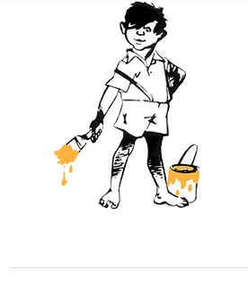

75 Years of Innovation in PaintSince its foundation in 1942, Asian Paints has come a long way to become India’s leading and Asia’s third largest paint company, with a turnover of Rs 168.43 billion. We operate in 16 countries and have 26 paint manufacturing facilities in the world, servicing consumers in over 65 countries.

The company has come a long way since its small beginnings in 1942.It was set up as a partnership firm by four friends who were willing to take on the world's biggest, most famous paint companies operating in India at that time. Over the course of 25 years, Asian Paints became a corporate force and India'sleading paints company.Driven by its strong consumer-focus and innovative spirit, the company has been the market leader in paints since 1967. Today, it is double thesize of any other paintcompany in India. Asian Paints manufactures a wide range of paints for decorative and industrial use.
VISION
“To be the fore runner of inspiring décor and to actively empower customers to create their dream homes”